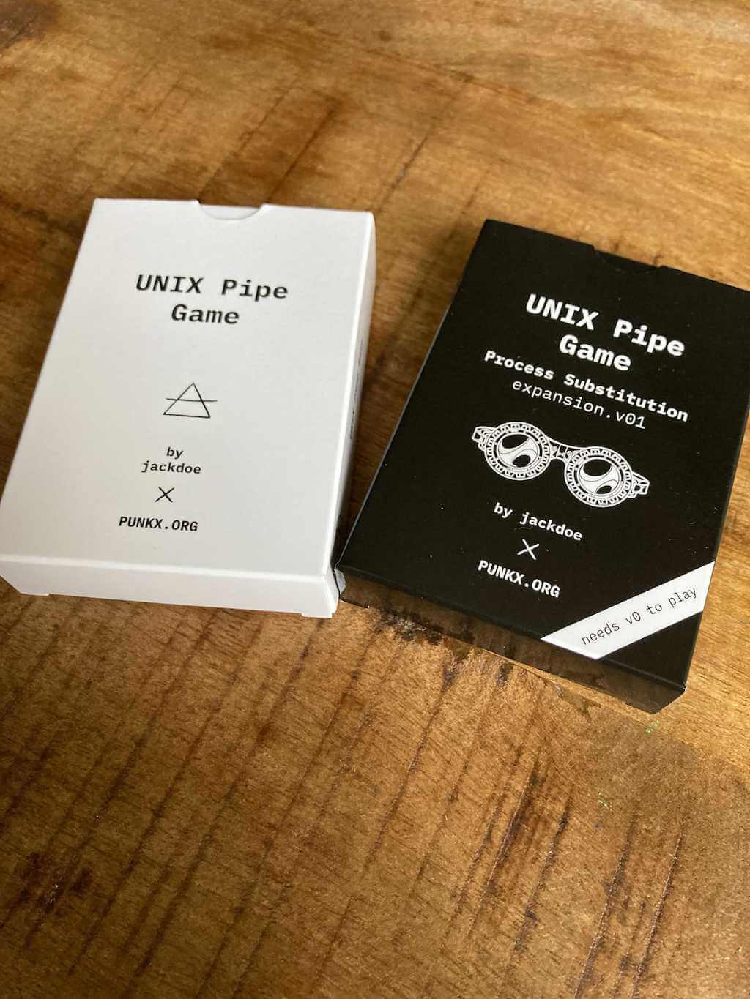
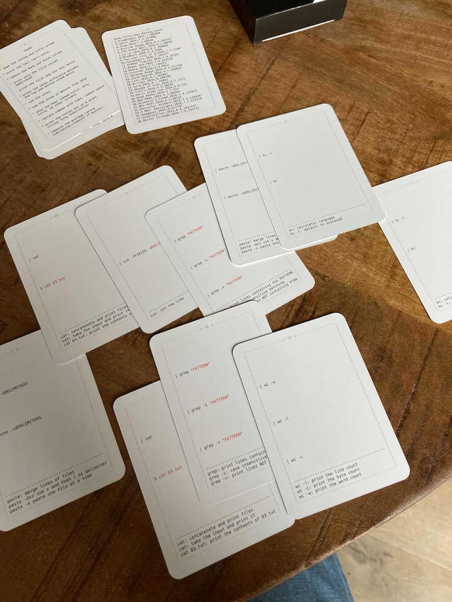

The UNIX Pipe Card Game: Process Substitution
This is an expansion to The Unix Pipe Game with much more difficult tasks, and it adds paste, tr, cut, bc as commands.
The expansion assumes that the parent is familiar with the basic unix commands: cat, grep, tail, head, wc, sort, uniq, paste, tr, cut, bc. The parent should show also show those commands in action the computer as well, if you do not have any UNIX system you can use jslinux in your browser.

Buy now
NB: You can not play this expansion without having the base game, the reason is the tasks require far more
cards and there is just no space in one deck. I am sorry, I really tried to make the deck self contained, but in the end I decided to go with 2 decks so the game becomes more fun.
The concept of process substitution is explained briefly in the deck, also the new commands are briefly explained as well, but I can only explain so much in ~1000 characters, this will surely not be enough to explain to your kids, so its better to let them play a bit in the command line to get a feeling about how paste, tr, cut, bc work.
If you are a parent teaching your kid, and is exploring more tools to help you, I made few other card games:
Example game round:
task: compute the average rating: sum(rating)/(amount of movies), so first we will make one process to cat the file, take the ratings column, skip the header, join the lines with + and pipe it into the calculator, we also need to count the amount of movies we have in the file, then we will use paste to join those outputs with '/' and pipe it again into the calculator:
paste -d/- <(cat 03.txt | cut -f 4 -d, |grep -v Rating| paste -sd+ | bc) <(cat 03.txt | grep -v Rating | wc -l) | bc

This game requires The UNIX Pipes Game
version 0, you can get it at:
https://punkx.org/unix-pipe-game/
It contains sort, cat and other commands
needed in order to solve the tasks in
this game expansion.
The rules are the same:
> 1. The youngest players picks a task
from the tasks card. You can not pick
the same task twice.
> 2. Shuffle the cards from both decks.
> 3. Put the cards face down on the
table.
> 4. Going clockwise each player picks
the top card from the deck and try to
complete the task
> 5. The first player who completes the
task gets a point.
> 6. IF there are no more tasks, GOTO 8
> 7. GOTO 1.
> 8. GAME OVER. INSERT COIN. GOTO 8
TASKS
* swap the rating and title column
* print the last row's votes
* remove the Rank and Votes column
* print only the title column
uppercased
* print the first and the last movie
* print the votes difference between
the top and bottom voted movie
* sum the votes
* sum the votes of movies from 2016
* show the best ranked title, only
title, no other columns
* replace commas with tabs, remove spaces
* print the titles but as a giant
string: Sing Interstellar ...
* compute the average rating
sum(rating)/(amount of movies)